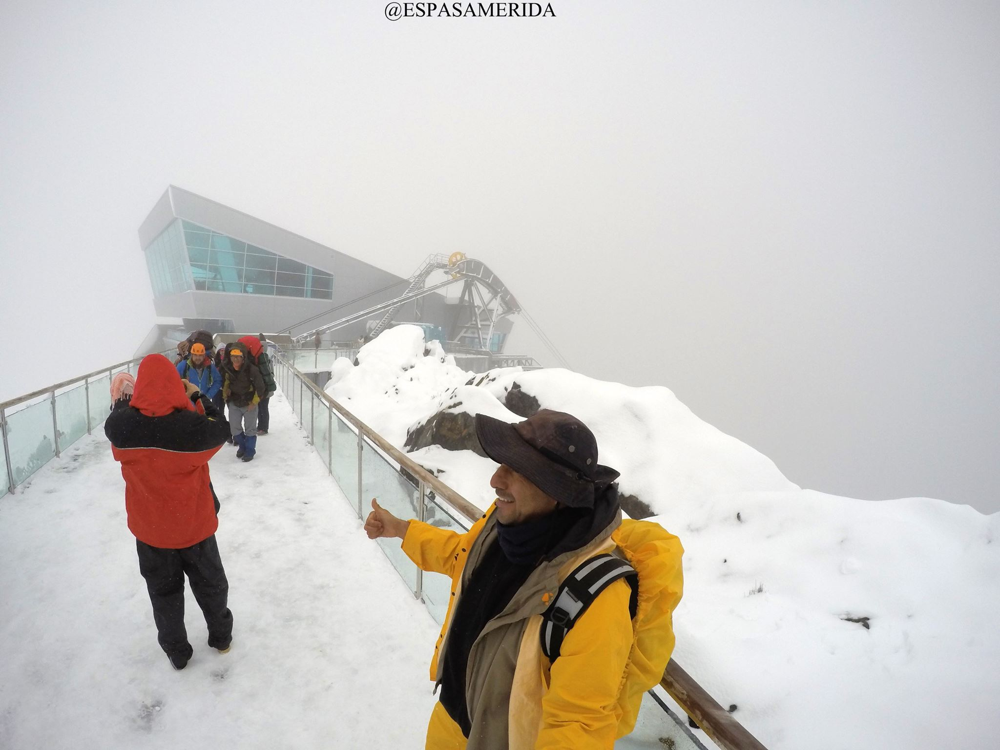
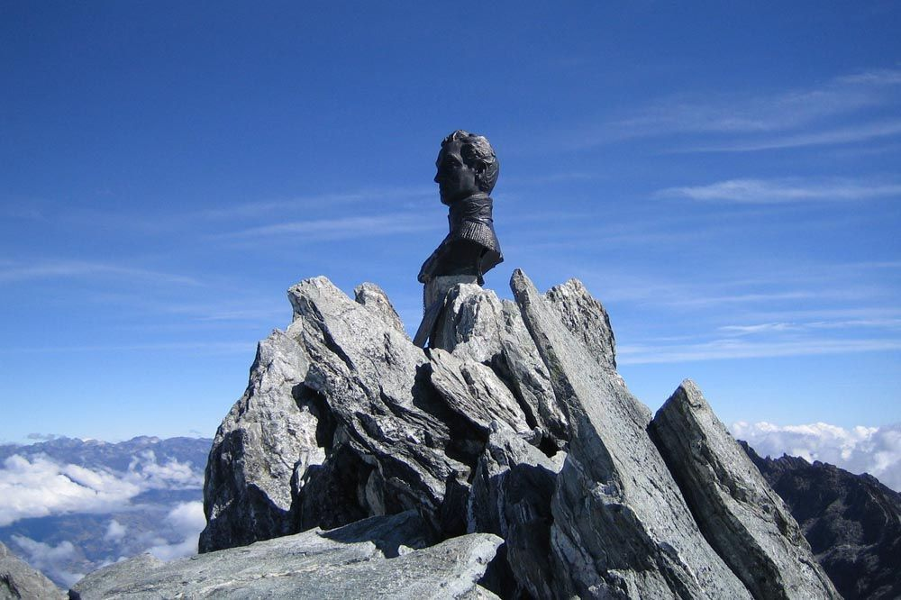

¡Descubre la majestuosidad del Pico Bolívar en el estado Mérida, Venezuela, y sumérgete en una experiencia única en uno de los destinos más impresionantes de los Andes venezolanos! Comienza tu aventura ascendiendo en el Teleférico de Mérida, el más alto y largo del mundo, que te llevará desde la ciudad hasta las alturas del Parque Nacional Sierra Nevada. Una vez en la cima, maravíllate con las vistas panorámicas de los picos nevados y los paisajes montañosos que se extienden a tus pies. Explora la encantadora ciudad de Mérida, con su arquitectura colonial, calles empedradas y ambiente vibrante, donde encontrarás una rica oferta gastronómica y cultural. Embárcate en emocionantes excursiones de trekking y escalada para llegar a la cumbre del imponente Pico Bolívar, el más alto de Venezuela, y contempla la belleza natural de los páramos andinos que lo rodean. Disfruta de actividades al aire libre como senderismo, ciclismo de montaña y observación de aves en este entorno montañoso único. Con su combinación de paisajes espectaculares, aventuras al aire libre y la hospitalidad de su gente, el Pico Bolívar y la ciudad de Mérida te ofrecen una experiencia inolvidable en el corazón de los Andes venezolanos. ¡Ven y descubre la belleza y la emoción que te esperan en Mérida!
El Teleférico de Mérida, conocido como el teleférico más alto y largo del mundo, ofrece una experiencia única que te llevará a través de majestuosos paisajes montañosos. Con sus más de 12 kilómetros de recorrido y una altitud que alcanza los 4.765 metros sobre el nivel del mar, este medio de transporte te brinda vistas panorámicas impresionantes de la ciudad de Mérida y sus alrededores. A lo largo de este emocionante viaje, los pasajeros pueden admirar la belleza de los Andes venezolanos, mientras se elevan sobre valles, ríos y picos nevados, ofreciendo una perspectiva única de la región. El Teleférico de Mérida es una experiencia imperdible para quienes desean explorar la belleza natural de Venezuela desde las alturas. El Teleférico de Mérida cuenta con diferentes tarifas según la categoría de los usuarios. La entrada general para adultos venezolanos tiene un precio de 20 USD, mientras que la entrada VIP, que incluye un cóctel para dos personas, tiene un costo de 50 USD. Los adultos mayores y niños venezolanos tienen una tarifa de 12 USD, y los niños menores de 3 años tienen entrada gratuita hasta la Estación Loma Redonda. En cuanto a los extranjeros, el boleto tiene un valor de 40 USD para disfrutar de este impresionante recorrido panorámico.
El Pico Bolívar, con una altitud de 4.978 metros sobre el nivel del mar, es la cumbre más alta de Venezuela y uno de los picos más emblemáticos de los Andes venezolanos. Esta ubicado en el Parque Nacional Sierra Nevada, en el estado Merida, y lleva su nombre en honor al líder independentista Simón Bolívar, esta imponente montaña es un destino popular para los amantes del trekking y la escalada. Desde su cima, los aventureros pueden disfrutar de vistas panorámicas impresionantes de los páramos andinos y picos nevados que se extienden a lo lejos. El Pico Bolívar alberga una rica biodiversidad, con una variedad de especies vegetales y animales adaptadas a las condiciones extremas de su entorno. Explorar el Pico Bolívar es sumergirse en la majestuosidad de los Andes venezolanos y descubrir la belleza y la grandeza de la naturaleza.
El busto del Libertador Simón Bolívar que se encuentra en la cima del Pico Bolívar es una obra emblemática que rinde homenaje al héroe independentista venezolano. Este busto fue colocado en la cumbre en el año 1952, como parte de las celebraciones del centenario de la muerte de Bolívar. Es una escultura de bronce que representa la figura de Bolívar mirando hacia el horizonte, con una expresión que evoca su carácter visionario y su lucha por la libertad de los pueblos latinoamericanos. El busto del Libertador en la cima del Pico Bolívar es un símbolo de la grandeza y el legado de Bolívar, así como un punto de referencia para los montañistas que conquistan esta imponente cumbre.